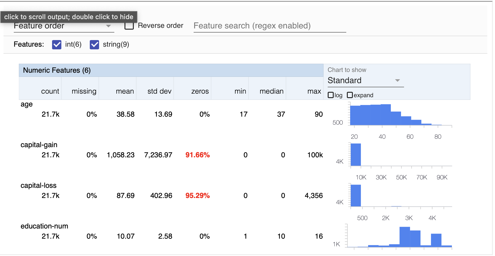
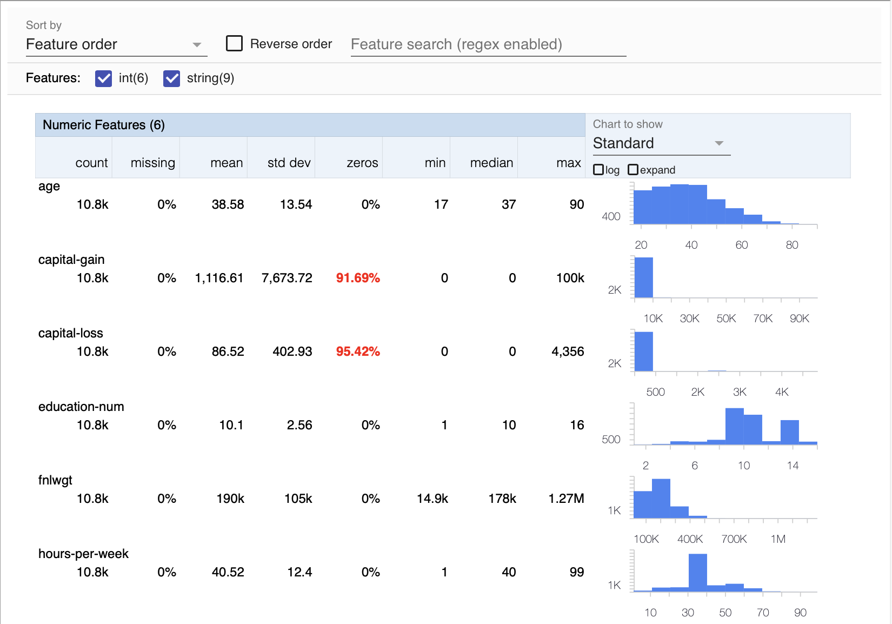

이번 자료에서는 지난번에 이어 Tensorflow Transform를 더욱 자세히 알아보겠습니다. 지난번에는 단순히 preprocessing의 과정에만 치중했다면 이번에는 ML Project의 pipeline에서의 역할에 중점을 둘 것입니다.
이번 자료를 통해 알아볼 것들은 다음과 같습니다. :
ExampleGen을 사용한 데이터 수집StatisticsGen을 사용한 train 데이터의 통계량 계산SchemaGen을 사용한 스키마 추측ExampleValidator를 사용한 이상치 검증Transform을 사용한 preprocessing
아래 그림에서 노란색 컴포넌트들이 이번 예제에서 사용될 컴포넌트들 입니다.

Setup
Import packages
import tensorflow as tf
from tfx import v1 as tfx
from tfx.orchestration.experimental.interactive.interactive_context import InteractiveContext
from google.protobuf.json_format import MessageToDict
import os
import pprint
pp = pprint.PrettyPrinter()Define paths
# location of the pipeline metadata store
_pipeline_root = './pipeline/'
# directory of the raw data files
_data_root = './data/census_data'
# path to the raw training data
_data_filepath = os.path.join(_data_root, 'adult.data')Preview the dataset
이전과 마찬가지로 Census Income dataset을 사용하겠습니다. 각 attribute는 다음과 같습니다 :
- age: continuous.
- workclass: Private, Self-emp-not-inc, Self-emp-inc, Federal-gov, Local-gov, State-gov, Without-pay, Never-worked.
- fnlwgt: continuous.
- education: Bachelors, Some-college, 11th, HS-grad, Prof-school, Assoc-acdm, Assoc-voc, 9th, 7th-8th, 12th, Masters, 1st-4th, 10th, Doctorate, 5th-6th, Preschool.
- education-num: continuous.
- marital-status: Married-civ-spouse, Divorced, Never-married, Separated, Widowed, Married-spouse-absent, Married-AF-spouse.
- occupation: Tech-support, Craft-repair, Other-service, Sales, Exec-managerial, Prof-specialty, Handlers-cleaners, Machine-op-inspct, Adm-clerical, Farming-fishing, Transport-moving, Priv-house-serv, Protective-serv, Armed-Forces.
- relationship: Wife, Own-child, Husband, Not-in-family, Other-relative, Unmarried.
- race: White, Asian-Pac-Islander, Amer-Indian-Eskimo, Other, Black.
- sex: Female, Male.
- capital-gain: continuous.
- capital-loss: continuous.
- hours-per-week: continuous.
- native-country: United-States, Cambodia, England, Puerto-Rico, Canada, Germany, Outlying-US(Guam-USVI-etc), India, Japan, Greece, South, China, Cuba, Iran, Honduras, Philippines, Italy, Poland, Jamaica, Vietnam, Mexico, Portugal, Ireland, France, Dominican-Republic, Laos, Ecuador, Taiwan, Haiti, Columbia, Hungary, Guatemala, Nicaragua, Scotland, Thailand, Yugoslavia, El-Salvador, Trinadad&Tobago, Peru, Hong, Holand-Netherlands.
# preview the first few rows of the CSV file
!head {_data_filepath}age,workclass,fnlwgt,education,education-num,marital-status,occupation,relationship,race,sex,capital-gain,capital-loss,hours-per-week,native-country,label
39, State-gov, 77516, Bachelors, 13, Never-married, Adm-clerical, Not-in-family, White, Male, 2174, 0, 40, United-States, <=50K
50, Self-emp-not-inc, 83311, Bachelors, 13, Married-civ-spouse, Exec-managerial, Husband, White, Male, 0, 0, 13, United-States, <=50K
38, Private, 215646, HS-grad, 9, Divorced, Handlers-cleaners, Not-in-family, White, Male, 0, 0, 40, United-States, <=50K
53, Private, 234721, 11th, 7, Married-civ-spouse, Handlers-cleaners, Husband, Black, Male, 0, 0, 40, United-States, <=50K
28, Private, 338409, Bachelors, 13, Married-civ-spouse, Prof-specialty, Wife, Black, Female, 0, 0, 40, Cuba, <=50K
37, Private, 284582, Masters, 14, Married-civ-spouse, Exec-managerial, Wife, White, Female, 0, 0, 40, United-States, <=50K
49, Private, 160187, 9th, 5, Married-spouse-absent, Other-service, Not-in-family, Black, Female, 0, 0, 16, Jamaica, <=50K
52, Self-emp-not-inc, 209642, HS-grad, 9, Married-civ-spouse, Exec-managerial, Husband, White, Male, 0, 0, 45, United-States, >50K
31, Private, 45781, Masters, 14, Never-married, Prof-specialty, Not-in-family, White, Female, 14084, 0, 50, United-States, >50KCreate the Interactive Context
production 단계에서 pipeline의 실행을 자동화하기 위해 Apache Beam 이나 Kubeflow가 사용됩니다. 여기서는 노트북에서 각 pipeline을 직접 실행할 것 입니다. 이를 위해 TFX는 Interactive Context를 제공합니다.
아래 코드는 InteractiveContext를 초기화하는 코드입니다. 이 코드는 _pipeline_root에 database를 생성합니다. 이 directory는 각 컴포넌트들이 다른 컴포넌트를 참조할 때 사용됩니다.
# Initialize the InteractiveContext with a local sqlite file.
# If you leave `_pipeline_root` blank, then the db will be created in a temporary directory.
# You can safely ignore the warning about the missing config file.
context = InteractiveContext(pipeline_root=_pipeline_root)Run TFX components interactively
이제 interactive하게 pipeline을 실행시킬 수 있습니다! 이게 각 컴포넌트에 대해 알아보도록 합시다.
ExampleGen
우선 ExampleGen부터 실행해봅시다. 이 컴포넌트의 역할은 다음과 같습니다 :
- 데이터 분할 (Train / Validation / Test)
- 각 데이터의 row를
tf.train.Example포멧으로 변환 (이 변환을 통해 데이터는 tensorflow에서 사용가능하게 됩니다.) _pipeline_rootdirectory에 데이터 압축 및 저장 (이 저장을 통해 다른 컴포넌트들이 이 데이터에 접근할 수 있습니다.)
ExampleGen은 CSV, tf.Record, and BigQuery와 같은 소스들을 지원합니다. 이번 자료의 경우 csv파일이므로, CsvExampleGen을 사용하도록 하겠습니다.
# Instantiate ExampleGen with the input CSV dataset
example_gen = tfx.components.CsvExampleGen(input_base=_data_root)You can execute the component by calling the run() method of the InteractiveContext.
# Execute the component
context.run(example_gen)위에서 보이는 결과가 database에 저장될 metadata입니다. 이는 프로젝트를 계속해서 추적할 수 있도록 합니다. 예를 들어, 위 셀을 다시 실행한다면, .execution_id가 증가하는 것을 확인할 수 있습니다.
컴포넌트의 결과값은 artifacts라고 불립니다. .component.outputs > ['examples'] > Channel > ._artifacts > [0]에서 확인할 수 있습니다. 이는 split된 이름과 데이터의 저장장소를 제공합니다.
또한 코드를 통해 artifacts를 조회할 수 있습니다.
# get the artifact object
artifact = example_gen.outputs['examples'].get()[0]
# print split names and uri
print(f'split names: {artifact.split_names}')
print(f'artifact uri: {artifact.uri}')split names: ["train", "eval"]
artifact uri: ./pipeline/CsvExampleGen/examples/1the number in ./pipeline/CsvExampleGen/examples/{number}에서 number는 새로 kernel을 시작할 때 마다 달라집니다. 이는 TFX가 각 kernel을 따로 저장하여 당신의 프로젝트를 이전으로 돌릴 수 있도록 합니다.
이제 데이터는 uri에 저장되어 있습니다. 또한 gzip을 통해 압축되어 있는 상태입니다.
# Get the URI of the output artifact representing the training examples
train_uri = os.path.join(artifact.uri, 'Split-train')
# See the contents of the `train` folder
!ls {train_uri}data_tfrecord-00000-of-00001.gz학습과정에서는 이 데이터의 일부를 보는 것도 도움이 될듯 합니다. 현재 데이터는 TFRecord format로 저장되어있기에, 이 데이터 타입을 다룰 메서드를 사용해보겠습니다.
# Get the list of files in this directory (all compressed TFRecord files)
tfrecord_filenames = [os.path.join(train_uri, name)
for name in os.listdir(train_uri)]
# Create a `TFRecordDataset` to read these files
dataset = tf.data.TFRecordDataset(tfrecord_filenames, compression_type="GZIP")# Define a helper function to get individual examples
def get_records(dataset, num_records):
'''Extracts records from the given dataset.
Args:
dataset (TFRecordDataset): dataset saved by ExampleGen
num_records (int): number of records to preview
'''
# initialize an empty list
records = []
# Use the `take()` method to specify how many records to get
for tfrecord in dataset.take(num_records):
# Get the numpy property of the tensor
serialized_example = tfrecord.numpy()
# Initialize a `tf.train.Example()` to read the serialized data
example = tf.train.Example()
# Read the example data (output is a protocol buffer message)
example.ParseFromString(serialized_example)
# convert the protocol bufffer message to a Python dictionary
example_dict = (MessageToDict(example))
# append to the records list
records.append(example_dict)
return records# Get 3 records from the dataset
sample_records = get_records(dataset, 3)
# Print the output
pp.pprint(sample_records)[{'features': {'feature': {'age': {'int64List': {'value': ['39']}},
'capital-gain': {'int64List': {'value': ['2174']}},
'capital-loss': {'int64List': {'value': ['0']}},
'education': {'bytesList': {'value': ['IEJhY2hlbG9ycw==']}},
'education-num': {'int64List': {'value': ['13']}},
'fnlwgt': {'int64List': {'value': ['77516']}},
'hours-per-week': {'int64List': {'value': ['40']}},
'label': {'bytesList': {'value': ['IDw9NTBL']}},
'marital-status': {'bytesList': {'value': ['IE5ldmVyLW1hcnJpZWQ=']}},
'native-country': {'bytesList': {'value': ['IFVuaXRlZC1TdGF0ZXM=']}},
'occupation': {'bytesList': {'value': ['IEFkbS1jbGVyaWNhbA==']}},
'race': {'bytesList': {'value': ['IFdoaXRl']}},
'relationship': {'bytesList': {'value': ['IE5vdC1pbi1mYW1pbHk=']}},
'sex': {'bytesList': {'value': ['IE1hbGU=']}},
'workclass': {'bytesList': {'value': ['IFN0YXRlLWdvdg==']}}}}},
{'features': {'feature': {'age': {'int64List': {'value': ['50']}},
'capital-gain': {'int64List': {'value': ['0']}},
'capital-loss': {'int64List': {'value': ['0']}},
'education': {'bytesList': {'value': ['IEJhY2hlbG9ycw==']}},
'education-num': {'int64List': {'value': ['13']}},
'fnlwgt': {'int64List': {'value': ['83311']}},
'hours-per-week': {'int64List': {'value': ['13']}},
'label': {'bytesList': {'value': ['IDw9NTBL']}},
'marital-status': {'bytesList': {'value': ['IE1hcnJpZWQtY2l2LXNwb3VzZQ==']}},
'native-country': {'bytesList': {'value': ['IFVuaXRlZC1TdGF0ZXM=']}},
'occupation': {'bytesList': {'value': ['IEV4ZWMtbWFuYWdlcmlhbA==']}},
'race': {'bytesList': {'value': ['IFdoaXRl']}},
'relationship': {'bytesList': {'value': ['IEh1c2JhbmQ=']}},
'sex': {'bytesList': {'value': ['IE1hbGU=']}},
'workclass': {'bytesList': {'value': ['IFNlbGYtZW1wLW5vdC1pbmM=']}}}}},
{'features': {'feature': {'age': {'int64List': {'value': ['38']}},
'capital-gain': {'int64List': {'value': ['0']}},
'capital-loss': {'int64List': {'value': ['0']}},
'education': {'bytesList': {'value': ['IEhTLWdyYWQ=']}},
'education-num': {'int64List': {'value': ['9']}},
'fnlwgt': {'int64List': {'value': ['215646']}},
'hours-per-week': {'int64List': {'value': ['40']}},
'label': {'bytesList': {'value': ['IDw9NTBL']}},
'marital-status': {'bytesList': {'value': ['IERpdm9yY2Vk']}},
'native-country': {'bytesList': {'value': ['IFVuaXRlZC1TdGF0ZXM=']}},
'occupation': {'bytesList': {'value': ['IEhhbmRsZXJzLWNsZWFuZXJz']}},
'race': {'bytesList': {'value': ['IFdoaXRl']}},
'relationship': {'bytesList': {'value': ['IE5vdC1pbi1mYW1pbHk=']}},
'sex': {'bytesList': {'value': ['IE1hbGU=']}},
'workclass': {'bytesList': {'value': ['IFByaXZhdGU=']}}}}}]이제 ExampleGen 컴포넌트 사용을 마치고, 다음 단계로 넘어가보도록 하겠습니다.
StatisticsGen
StatisticsGen 컴포넌트는 데이터의 통계량을 계산하는 컴포넌트 입니다. StatisticsGen은 CsvExampleGen을 통해 만들어진 결과를 input으로 받습니다.
# Instantiate StatisticsGen with the ExampleGen ingested dataset
statistics_gen = tfx.components.StatisticsGen(
examples=example_gen.outputs['examples'])
# Execute the component
context.run(statistics_gen)show() 를 통해 계산된 통계량을 알 수 있습니다.
# Show the output statistics
context.show(statistics_gen.outputs['statistics'])

SchemaGen
SchemaGen은 schema를 생성할 떄 사용되는 컴포넌트로 StatisticsGen의 결과값을 input으로 받습니다. 이 컴포넌트는 기본적으로 train 데이터만을 활용하여 schema를 생성합니다.
# Instantiate SchemaGen with the StatisticsGen ingested dataset
schema_gen = tfx.components.SchemaGen(
statistics=statistics_gen.outputs['statistics'],
)
# Run the component
context.run(schema_gen)You can then visualize the generated schema as a table.
# Visualize the schema
context.show(schema_gen.outputs['schema'])| Type | Presence | Valency | Domain | |
|---|---|---|---|---|
| Feature name | ||||
| ‘age’ | INT | required | - | |
| ‘capital-gain’ | INT | required | - | |
| ‘capital-loss’ | INT | required | - | |
| ‘education’ | STRING | required | ‘education’ | |
| ‘education-num’ | INT | required | - | |
| ‘fnlwgt’ | INT | required | - | |
| ‘hours-per-week’ | INT | required | - | |
| ‘label’ | STRING | required | ‘label’ | |
| ‘marital-status’ | STRING | required | ‘marital-status’ | |
| ‘native-country’ | STRING | required | ‘native-country’ | |
| ‘occupation’ | STRING | required | ‘occupation’ | |
| ‘race’ | STRING | required | ‘race’ | |
| ‘relationship’ | STRING | required | ‘relationship’ | |
| ‘sex’ | STRING | required | ‘sex’ | |
| ‘workclass’ | STRING | required | ‘workclass’ |
| Values | |
|---|---|
| Domain | |
| ‘education’ | ’ 10th’, ’ 11th’, ’ 12th’, ’ 1st-4th’, ’ 5th-6th’, ’ 7th-8th’, ’ 9th’, ’ Assoc-acdm’, ’ Assoc-voc’, ’ Bachelors’, ’ Doctorate’, ’ HS-grad’, ’ Masters’, ’ Preschool’, ’ Prof-school’, ’ Some-college’ |
| ‘label’ | ’ <=50K’, ’ >50K’ |
| ‘marital-status’ | ’ Divorced’, ’ Married-AF-spouse’, ’ Married-civ-spouse’, ’ Married-spouse-absent’, ’ Never-married’, ’ Separated’, ’ Widowed’ |
| ‘native-country’ | ’ ?‘,’ Cambodia’, ’ Canada’, ’ China’, ’ Columbia’, ’ Cuba’, ’ Dominican-Republic’, ’ Ecuador’, ’ El-Salvador’, ’ England’, ’ France’, ’ Germany’, ’ Greece’, ’ Guatemala’, ’ Haiti’, ’ Honduras’, ’ Hong’, ’ Hungary’, ’ India’, ’ Iran’, ’ Ireland’, ’ Italy’, ’ Jamaica’, ’ Japan’, ’ Laos’, ’ Mexico’, ’ Nicaragua’, ’ Outlying-US(Guam-USVI-etc)‘,’ Peru’, ’ Philippines’, ’ Poland’, ’ Portugal’, ’ Puerto-Rico’, ’ Scotland’, ’ South’, ’ Taiwan’, ’ Thailand’, ’ Trinadad&Tobago’, ’ United-States’, ’ Vietnam’, ’ Yugoslavia’, ’ Holand-Netherlands’ |
| ‘occupation’ | ’ ?‘,’ Adm-clerical’, ’ Armed-Forces’, ’ Craft-repair’, ’ Exec-managerial’, ’ Farming-fishing’, ’ Handlers-cleaners’, ’ Machine-op-inspct’, ’ Other-service’, ’ Priv-house-serv’, ’ Prof-specialty’, ’ Protective-serv’, ’ Sales’, ’ Tech-support’, ’ Transport-moving’ |
| ‘race’ | ’ Amer-Indian-Eskimo’, ’ Asian-Pac-Islander’, ’ Black’, ’ Other’, ’ White’ |
| ‘relationship’ | ’ Husband’, ’ Not-in-family’, ’ Other-relative’, ’ Own-child’, ’ Unmarried’, ’ Wife’ |
| ‘sex’ | ’ Female’, ’ Male’ |
| ‘workclass’ | ’ ?‘,’ Federal-gov’, ’ Local-gov’, ’ Never-worked’, ’ Private’, ’ Self-emp-inc’, ’ Self-emp-not-inc’, ’ State-gov’, ’ Without-pay’ |
이제 ExampleValidator를 활용하여 데이터의 이상치를 점검해봅시다.
ExampleValidator
ExampleValidator 컴포넌트는 데이터의 schema을 기반으로 데이터의 이상치를 검증하는 역할을 합니다. 이 컴포넌트는 StatisticsGen 과 SchemaGen 모두를 input으로 사용합니다. 기본적으로 validation 데이터의 통계량과 train 데이터의 통계량을 비교하여 이상치를 찾아냅니다.
# Instantiate ExampleValidator with the StatisticsGen and SchemaGen ingested data
example_validator = tfx.components.ExampleValidator(
statistics=statistics_gen.outputs['statistics'],
schema=schema_gen.outputs['schema'])
# Run the component.
context.run(example_validator)# Visualize the results
context.show(example_validator.outputs['anomalies'])No anomalies found.
No anomalies found.
이상치가 나타나지 않았기에 다음 단계로 넘어가겠습니다.
Transform
Transform 컴포넌트는 실제로 feature 엔지니어링을 수행하는 컴포넌트로 train 데이터와 그 이외의 데이터 모두를 변환시킵니다.
Transform 컴포넌트는 ExampleGen과 SchemaGen 그리고 preprocessing function을 input으로 받습니다.
이전 자료와 달리, 이번에는 코드의 간결화를 위해 preprocessing function을 여러 파일로 나누어 만들 예정입니다.
# Set the constants module filename
_census_constants_module_file = 'census_constants.py'%%writefile {_census_constants_module_file}
# Features with string data types that will be converted to indices
CATEGORICAL_FEATURE_KEYS = [
'education', 'marital-status', 'occupation', 'race', 'relationship', 'workclass', 'sex', 'native-country'
]
# Numerical features that are marked as continuous
NUMERIC_FEATURE_KEYS = ['fnlwgt', 'education-num', 'capital-gain', 'capital-loss', 'hours-per-week']
# Feature that can be grouped into buckets
BUCKET_FEATURE_KEYS = ['age']
# Number of buckets used by tf.transform for encoding each bucket feature.
FEATURE_BUCKET_COUNT = {'age': 4}
# Feature that the model will predict
LABEL_KEY = 'label'
# Utility function for renaming the feature
def transformed_name(key):
return key + '_xf'Writing census_constants.py# Set the transform module filename
_census_transform_module_file = 'census_transform.py'%%writefile {_census_transform_module_file}
import tensorflow as tf
import tensorflow_transform as tft
import census_constants
# Unpack the contents of the constants module
_NUMERIC_FEATURE_KEYS = census_constants.NUMERIC_FEATURE_KEYS
_CATEGORICAL_FEATURE_KEYS = census_constants.CATEGORICAL_FEATURE_KEYS
_BUCKET_FEATURE_KEYS = census_constants.BUCKET_FEATURE_KEYS
_FEATURE_BUCKET_COUNT = census_constants.FEATURE_BUCKET_COUNT
_LABEL_KEY = census_constants.LABEL_KEY
_transformed_name = census_constants.transformed_name
# Define the transformations
def preprocessing_fn(inputs):
"""tf.transform's callback function for preprocessing inputs.
Args:
inputs: map from feature keys to raw not-yet-transformed features.
Returns:
Map from string feature key to transformed feature operations.
"""
outputs = {}
# Scale these features to the range [0,1]
for key in _NUMERIC_FEATURE_KEYS:
outputs[_transformed_name(key)] = tft.scale_to_0_1(
inputs[key])
# Bucketize these features
for key in _BUCKET_FEATURE_KEYS:
outputs[_transformed_name(key)] = tft.bucketize(
inputs[key], _FEATURE_BUCKET_COUNT[key])
# Convert strings to indices in a vocabulary
for key in _CATEGORICAL_FEATURE_KEYS:
outputs[_transformed_name(key)] = tft.compute_and_apply_vocabulary(inputs[key])
# Convert the label strings to an index
outputs[_transformed_name(_LABEL_KEY)] = tft.compute_and_apply_vocabulary(inputs[_LABEL_KEY])
return outputsWriting census_transform.py이제 Transform 컴포넌트의 input이 모두 준비되었습니다.
# Ignore TF warning messages
tf.get_logger().setLevel('ERROR')
# Instantiate the Transform component
transform = tfx.components.Transform(
examples=example_gen.outputs['examples'],
schema=schema_gen.outputs['schema'],
module_file=os.path.abspath(_census_transform_module_file))
# Run the component
context.run(transform)transform의 artifact(위 출력 셀의 .component.outputs)를 살펴봅시다. 이 컴포넌트는 다음과 같은 출력을 생성합니다.:
- 전처리 연산을 수행할 수 있는 그래프는
transform_graph입니다. 이 그래프는 들어오는 데이터의 일관된 변환을 보장하기 위해 train 데이터와 그 이외의 데이터에 포함됩니다. transformed_examples는 전처리된 데이터를 가리킵니다.updated_analyzer_cache는 이전 실행에서 저장된 계산입니다.
transform_graph artifact를 확인해 봅시다. 이는 3개의 subdirectory를 가진 directory입니다.
# Get the uri of the transform graph
transform_graph_uri = transform.outputs['transform_graph'].get()[0].uri
# List the subdirectories under the uri
os.listdir(transform_graph_uri)['metadata', 'transformed_metadata', 'transform_fn']- The
metadata는 원본 데이터의 schema를 가지고 있습니다. - The
transformed_metadata는 preprocessing된 데이터의 schema를 가지고 있습니다. - The
transform_fnpreprocessing graph를 포함합니다.
# Get the URI of the output artifact representing the transformed examples
train_uri = os.path.join(transform.outputs['transformed_examples'].get()[0].uri, 'Split-train')
# Get the list of files in this directory (all compressed TFRecord files)
tfrecord_filenames = [os.path.join(train_uri, name)
for name in os.listdir(train_uri)]
# Create a `TFRecordDataset` to read these files
transformed_dataset = tf.data.TFRecordDataset(tfrecord_filenames, compression_type="GZIP")# Get 3 records from the dataset
sample_records_xf = get_records(transformed_dataset, 3)
# Print the output
pp.pprint(sample_records_xf)[{'features': {'feature': {'age_xf': {'int64List': {'value': ['2']}},
'capital-gain_xf': {'floatList': {'value': [0.021740217]}},
'capital-loss_xf': {'floatList': {'value': [0.0]}},
'education-num_xf': {'floatList': {'value': [0.8]}},
'education_xf': {'int64List': {'value': ['2']}},
'fnlwgt_xf': {'floatList': {'value': [0.044301897]}},
'hours-per-week_xf': {'floatList': {'value': [0.39795917]}},
'label_xf': {'int64List': {'value': ['0']}},
'marital-status_xf': {'int64List': {'value': ['1']}},
'native-country_xf': {'int64List': {'value': ['0']}},
'occupation_xf': {'int64List': {'value': ['3']}},
'race_xf': {'int64List': {'value': ['0']}},
'relationship_xf': {'int64List': {'value': ['1']}},
'sex_xf': {'int64List': {'value': ['0']}},
'workclass_xf': {'int64List': {'value': ['4']}}}}},
{'features': {'feature': {'age_xf': {'int64List': {'value': ['3']}},
'capital-gain_xf': {'floatList': {'value': [0.0]}},
'capital-loss_xf': {'floatList': {'value': [0.0]}},
'education-num_xf': {'floatList': {'value': [0.8]}},
'education_xf': {'int64List': {'value': ['2']}},
'fnlwgt_xf': {'floatList': {'value': [0.048237596]}},
'hours-per-week_xf': {'floatList': {'value': [0.12244898]}},
'label_xf': {'int64List': {'value': ['0']}},
'marital-status_xf': {'int64List': {'value': ['0']}},
'native-country_xf': {'int64List': {'value': ['0']}},
'occupation_xf': {'int64List': {'value': ['0']}},
'race_xf': {'int64List': {'value': ['0']}},
'relationship_xf': {'int64List': {'value': ['0']}},
'sex_xf': {'int64List': {'value': ['0']}},
'workclass_xf': {'int64List': {'value': ['1']}}}}},
{'features': {'feature': {'age_xf': {'int64List': {'value': ['2']}},
'capital-gain_xf': {'floatList': {'value': [0.0]}},
'capital-loss_xf': {'floatList': {'value': [0.0]}},
'education-num_xf': {'floatList': {'value': [0.53333336]}},
'education_xf': {'int64List': {'value': ['0']}},
'fnlwgt_xf': {'floatList': {'value': [0.13811344]}},
'hours-per-week_xf': {'floatList': {'value': [0.39795917]}},
'label_xf': {'int64List': {'value': ['0']}},
'marital-status_xf': {'int64List': {'value': ['2']}},
'native-country_xf': {'int64List': {'value': ['0']}},
'occupation_xf': {'int64List': {'value': ['9']}},
'race_xf': {'int64List': {'value': ['0']}},
'relationship_xf': {'int64List': {'value': ['1']}},
'sex_xf': {'int64List': {'value': ['0']}},
'workclass_xf': {'int64List': {'value': ['0']}}}}}]